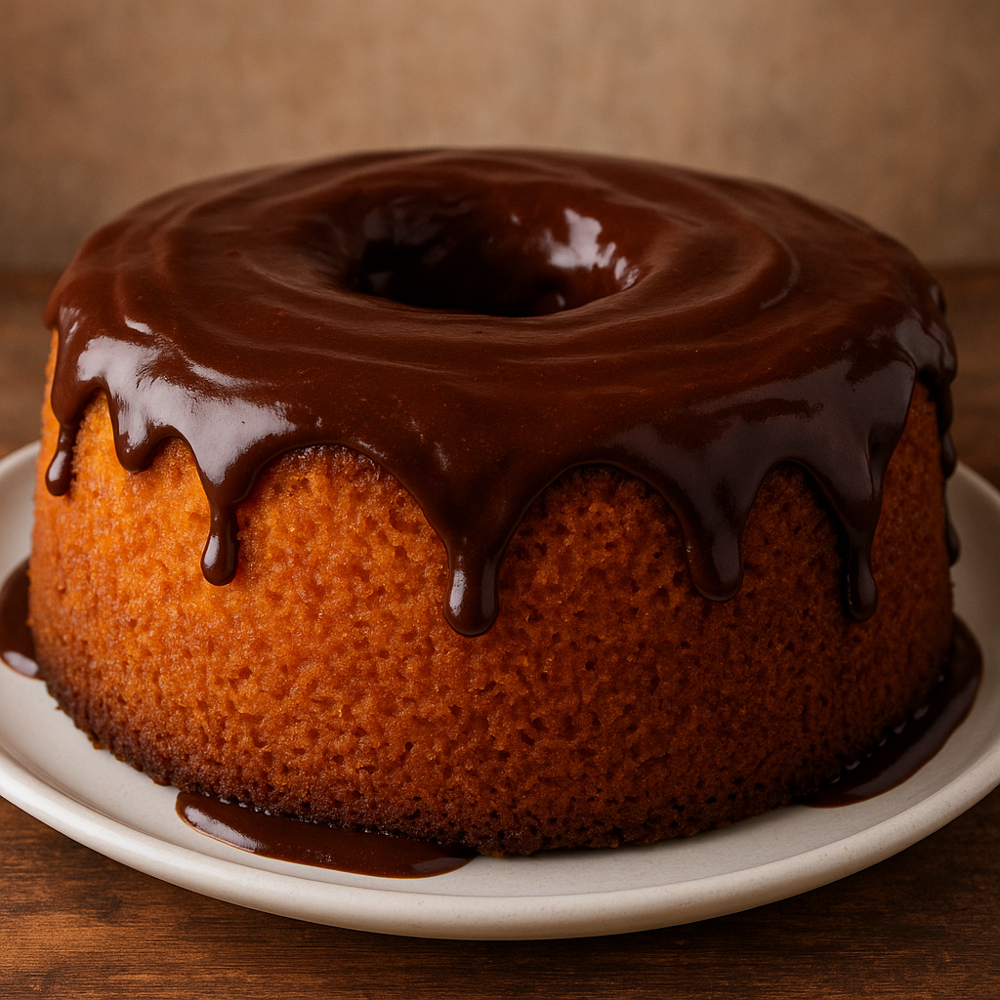

Voltar
Receita: Bolo de Cenoura

Ingredientes (forma de 20 cm)
Massa:
- 3 cenouras médias raladas (cerca de 300g)
- 3 ovos
- 1 xícara (chá) de óleo
- 2 xícaras (chá) de açucar
- 2 xícaras (chá) de farinha de trigo
- 1 colher (sopa) de fermento em pó
Cobertura de Chocolate:
- 4 colheres (sopa) de chocolate em pó ou cacau 50%
- 4 colheres (sopa) de açucar
- 1 colher (sopa) de manteiga
- 3 colheres (sopa) de leite
Modo de Preparo:
- Bolo:
- No liquidificador, bata as cenouras, ovos e óleo até ficar homogêneo.
- Em uma tigela, misture o açucar e a farinha, depois adicione a mistura do liquidificador.
- Por último, acrescente o fermento e mexa delicadamente.
- Despeje em forma untada e enfarinhada e leve ao forno pré-aquecido a 180ºC por ~40minutos
- Cobertura:
- Em uma panela, misture todos os ingredientes e leve em fogo baixo até engrossar, mexendo sem parar.
- Despeje sobre o bolo ainda quente e espalhe com uma espátula.